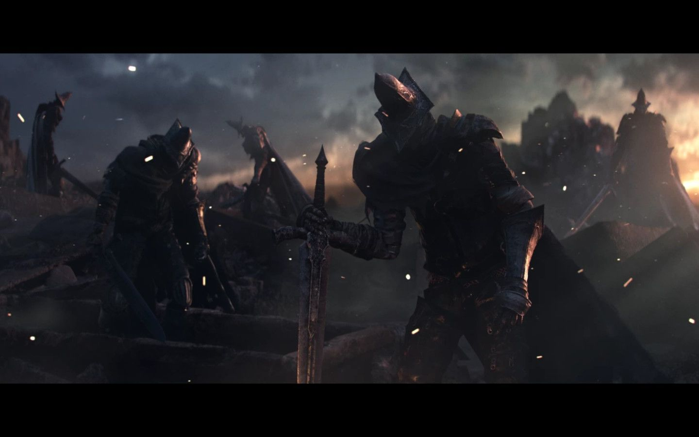

据玩家推测为同名游戏一代中的“黑森林猎杀团”之延续，职责为守护法兰老狼（一说认为老狼为《黑暗之魂》初代中出场的狼骑士阿尔特留斯一起行动的巨狼希夫，但是在初代之中希夫已经被主角杀死，且老狼的形貌特征与希夫并无相似之处，因此对此说法存疑）的遗骸并对抗深渊的侵蚀。武器“法兰大剑”为以左手装备的爪形短刀和右手的大剑组成的“特殊特大剑”，因其如狼一般灵巧的攻击模式/动作被戏称为法兰街舞队。
不死队的队员皆为仰慕初代《黑暗之魂》中”深渊漫步者“狼骑士阿尔特留斯的不死人战士。
为了迎合其战斗风格，与游戏中大量出现的各类骑士/战士的板甲相比，不死队队员的护甲较为轻便。其三角形的尖顶铁盔被视作不详的象征。玩家获得的不死队的装备的介绍中提到：他们是在黑暗中寻觅深渊征兆，分享狼血并引以为誓的战士。为了剿灭深渊不惜灭掉整个国家（并未具体提及为哪一国家，据推测可能灭掉了致力于研究深渊之力的霸王沃尼尔的国家卡萨斯，并将其封印于卡萨斯墓地之中。）等信息。不死队字面意义上的“灭国级”的力量可见一斑。
其灵魂可铸造法兰大剑与狼骑士大剑，其中狼骑士大剑为一代游戏中深渊行者阿尔特留斯的武器，为玩家的推测提供了佐证。法兰不死队礼仪为游戏中的肢体语言之一，右臂伸展挺直大剑，并将左手爪刃置于右臂之上放于胸前。不死队队员的武器“法兰大剑”虽然是笨重的大剑，但是攻击动作却华丽、灵巧，因其独特的剑术的关系，他们并不装备盾牌，而是在左手装备了一柄用于在敌人身上制造轻伤或便于弹开敌人攻击的爪形短刀.

- 来抓我呀
-